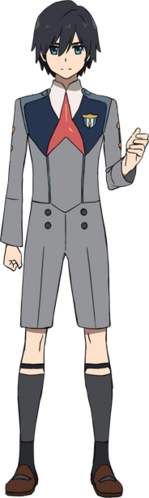
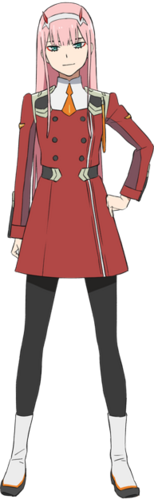

DARLING character
ตัวละตรในการ์ตูน เรื่องดาร์ลิ้ง
Hiro (ヒロ, Hiro) is the main protagonist of DARLING in the FRANXX. He was a Parasite with the codename "016" and was once known as a prodigy among the Children. However, he failed to synchronize with his partner Naomi and was considered nothing but a failure as a pilot. As a result, he did not know where he belonged and struggled to find his place in the world. However, upon being partnered and piloting with Zero Two, he became an official Parasite and found a new reason to live. Hiro and Zero Two were the newest members of the 13th Plantation, piloting a FRANXX called Strelizia.

Zero Two (ゼロツー, Zero Tsū) is the main heroine and the deuteragonist of DARLING in the FRANXX. She is
a human-klaxo sapien hybrid and a member of the APE Special Forces, primarily fighting on the front
lines. As an elite Parasite with the codename "002", also known as the "Partner Killer", Zero Two
had always accepted solitude due to her horns and Klaxosaur blood. Despite having no regard for
human life or her own and being accustomed to fighting solo, she took interest in Hiro and offered
an opportunity to pilot with her, making him her new partner and "darling". After Hiro was able to
ride with her more than three times, the pair became the 13th Plantation's newest members, piloting
the powerful FRANXX Strelizia.